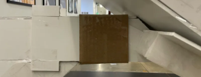

West Hollywood DMV Redesign: A User-Centered Approach to Efficiency and Comfort

Tools: Miro, Discord, Physical crafts tools
Duration: 2 months
Roles:
Prototyping Co-Leader, Prototype Designer
Overview
For our final project in my Design Thinking in Production class, our class operated as a full-scale design agency to tackle a notoriously frustrating user experience: the DMV. After selecting the West Hollywood DMV as our focus, we formed teams specializing in UX research, UX design, storytelling, concept development, and prototyping — where I played a key role.
The Problem
Long waits, unclear navigation, and uncomfortable environments make DMVs synonymous with frustration. We set out to understand the root causes of this negative experience and redesign the space to better support both users and staff.
Research
This project provided the unique experience of having a UX Research "department" working alongside us. This allowed my prototyping department to devote our full focus to solving the issues they gave us.
Project Vision
Our goal was to transform the West Hollywood DMV into a space that maximized efficiency, improved user flow, and created a more pleasant waiting experience. Through extensive brainstorming, our key redesign principles emerged:
- Increased natural light to enhance ambiance and reduce stress
- Smarter seating arrangements that allow for comfort and efficiency
- A built-in café, capitalizing on expected wait times by offering a more engaging, revenue-generating experience
- A kiosk system to streamline both DMV check-in and café ordering, reducing the need for staff intervention and improving overall service flow.
My Role: Prototyping
The Team
Our four-person prototyping team created a scaled model of the DMV and a full-scale interactive kiosk prototype — the centerpiece of the redesigned service flow.
My Personal Contributions
In our four-person prototyping team, I took on a central role in the design and construction of the full-scale kiosk prototype. My key contributions included:
- Designing the kiosk from the ground up, calculating ergonomic dimensions for accessibility
- Researching and sourcing materials within an $80 budget
- Leading construction efforts, guiding my teammates in understanding the design vision and ensuring accurate assembly of components
- Ensuring accessibility compliance for both wheelchair and standing users
The Kiosk
To create a more inclusive and efficient kiosk, we researched accessibility standards, including wheelchair height guidelines, standing height considerations, and ergonomic controls. Key features of our prototype included:
- Weighted stand with an extended arm, allowing wheelchair users to roll underneath or approach from the side
- Touchscreen display with a tactile keyboard, ensuring precision for all users
- Joystick-based navigation, accommodating users with motor control challenges
- Adjustable screen angle via a slider system behind the screen
- Two physical buttons for navigation, marked with a car icon (for DMV services) and a coffee cup icon (for café orders), enabling an intuitive switching mechanism.
- Thematic idle screens, with café kiosks displaying cascading coffee beans and DMV kiosks featuring license plate graphics, subtly guiding users to the correct service point.


|  |
Collaboration and Outcome
Close coordination between departments ensured consistency across research and design. Our prototype demonstrated how small physical changes can redefine public service experiences, making them more efficient and humane. This project strengthened my collaboration and prototyping skills while showing how UX principles extend beyond digital products.
This project is a conceptual redesign created for educational purposes only.